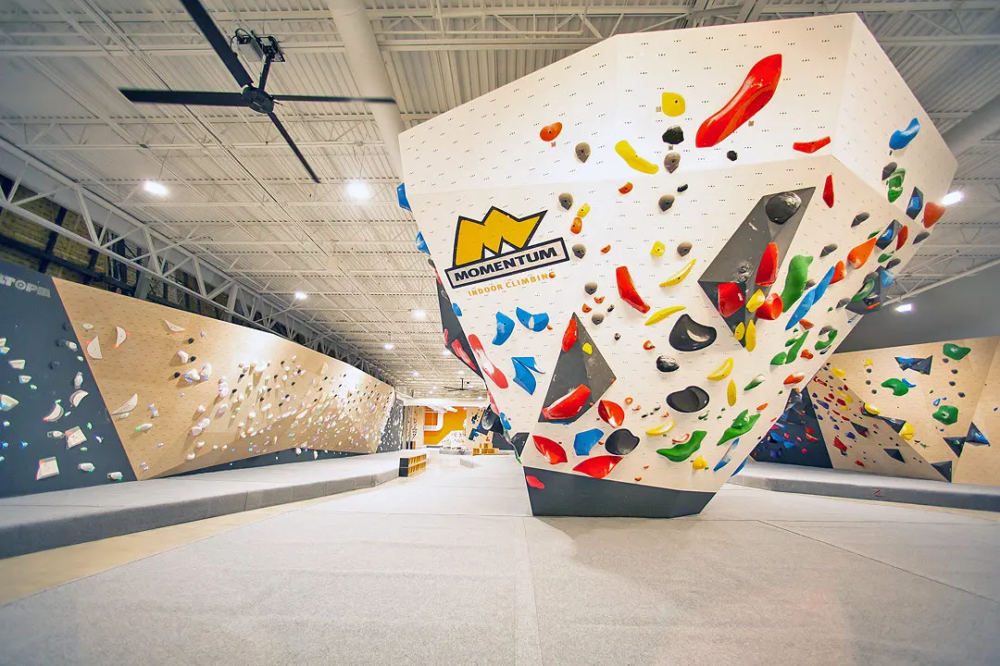
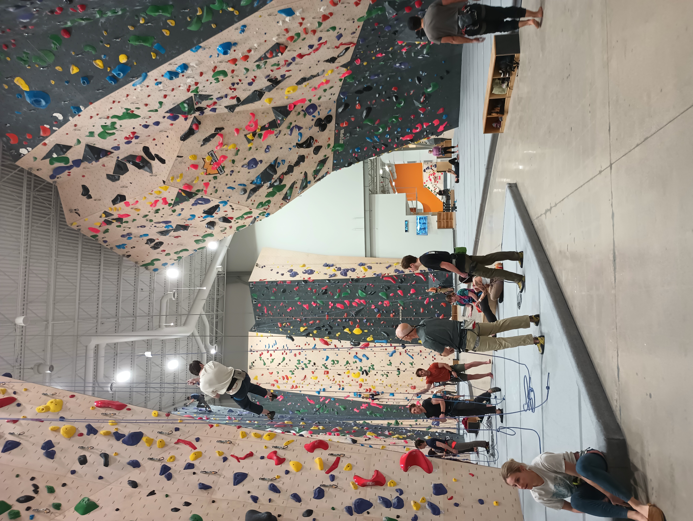

All About Rock Climbing
I Love Rock Climbing. I started in the summer of 2025, and I am now obsessed with it, going almost every other day. I love figuring out how to make my body move to get to the next hold.
I think it is really satisfying to reach the top without falling, especially since I am short, so it is always a bit harder for me than taller people.
 My experiences
Since I have been climbing for a bit now, I have been able to try out lots of different forms of climbing. I started out top-roping, just climbing with the rope and reaching the top.
Then, I tried out bouldering. It is a lot shorter, and a lot more technical. You rest a lot more, and the climbs are a lot differnt than top-roping, but I think that it is really fun.
In one month, I will turn 14 and be able to start lead-climbing. This is where you bring the rope up with you and clip it into the wall as you climb. I am so excited!
The hardest climbs I have ever done are as follows. For top-roping, I have done a 5.12B. For bouldering, I have done a V6. I am pretty good I must say...
I have gone to a lot of different gyms too. I have gone to the one near Skyline, in Millcreek. I have also gone to the one in Fort Union near my house. I have also drove all the way down to Sandy for a competition. This gym was a lot harder than the other gyms. It is also the first Momentum gym that was made!